Avant de chercher l'inconnu, retrouver le connu
Kepler-69 est un système à deux planètes confirmé depuis 2013. Le pipeline a été pointé dessus en aveugle — sans lui donner la période attendue — pour vérifier qu'il retrouve un vrai signal avant de lui faire confiance sur autre chose.
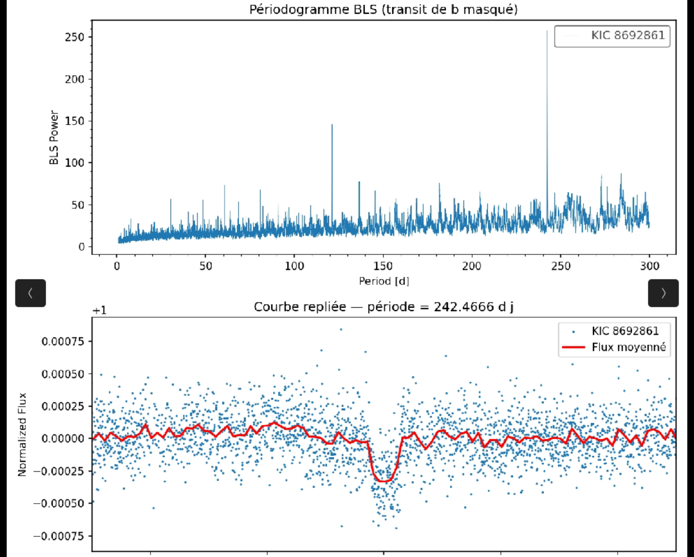
- Kepler-69b — période publiée 13.7 jdétecté : 13.7218 j
- Kepler-69c — période publiée 242.4613 jdétecté : 242.4666 j
- Écart sur la planète c < 1 hsur une période de 242 jours
Chaque filtre existe à cause d'une étoile précise
Aucun de ces garde-fous n'a été ajouté par précaution théorique. Chacun corrige une erreur réellement commise, sur une vraie étoile, repérée en l'examinant à l'œil.
Bord de grille de recherche
TIC 346888622 retrouvait deux fois la même période — 0.5000 j, exactement la borne basse testée. Le vrai signal, s'il existe, tombe hors de la plage explorée. période ≈ borne → écarté
Ratio durée/période excessif
TIC 326242565 et TIC 65903024 donnaient des "transits" occupant 34 % et 44 % de leur cycle orbital. Une vraie planète transite rarement plus de 10-15 % de sa période. durée / période > 15 % → écarté
Période dupliquée après masquage
Douze étoiles retrouvaient leur propre signal jusqu'à 5 fois après masquage — TIC 120932152 : 1.2629 j, cinq fois d'affilée. Le masquage n'efface pas une variabilité continue. signal non masqué → étoile entière invalidée
Profondeur de transit excessive
TIC 93441696 creusait 20 % de flux, en double bosse par cycle. Aucune planète n'atteint cette profondeur — seule une étoile compagnon le peut. profondeur > 5 % → écarté
Cluster à 13.7 jours
Plusieurs étoiles convergeaient vers la même période, à quelques heures près : 13.7 jours — la période orbitale de TESS elle-même. Chaque secteur contient une coupure de données au périgée, à mi-parcours. période ≈ 13.7 j ± 0.9 → écarté
Ce qui a passé les filtres automatiques — puis l'œil
Chaque étoile ci-dessous a survécu aux cinq filtres et mérité un examen visuel complet : périodogramme, cycle replié en entier, zoom sur le signal. Un tampon = un verdict, jamais retouché après coup.
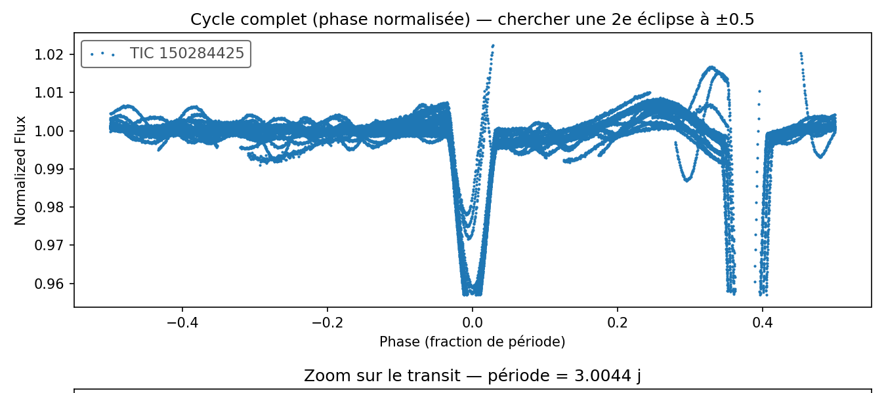
BinaireTIC 150284425
RA 117.311 · DEC -35.243 · Tmag 5.99
Creux net et profond (4.2 %) — le plus prometteur du lot. Mais l'étoile hôte est une A chaude de 3.6 R☉ : ça implique un compagnon de 7.17 rayons joviens. Trop gros pour une planète — naine rouge ou brune en transit.
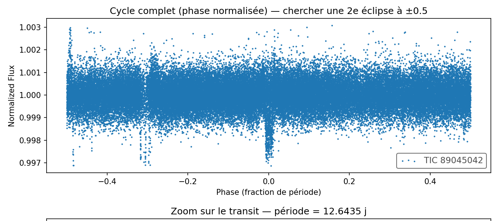
BinaireTIC 89045042
RA 47.594 · DEC -31.127 · Tmag 8.86
Deux éclipses distinctes par cycle, décalées (pas à phase 0.5 pile) — signature d'une binaire à éclipses sur orbite excentrique, pas d'un transit planétaire isolé.
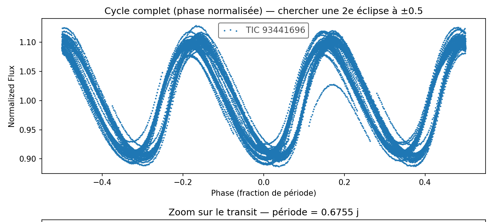
BinaireTIC 93441696
RA 87.043 · DEC -20.023 · Tmag 7.91
20 % de variation, double bosse par cycle — variation ellipsoïdale classique d'une binaire serrée déformée par la marée. Le cas qui a motivé le filtre de profondeur.
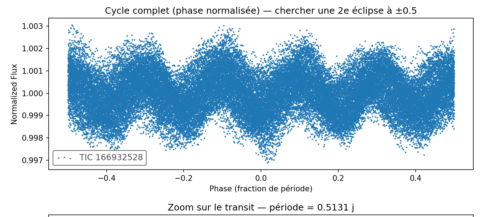
VariableTIC 166932528
RA 60.170 · DEC -30.491 · Tmag 5.93
Onde continue sur l'ensemble du cycle, forêt de pics comparables au périodogramme — étoile pulsante à fréquences multiples, pas un événement ponctuel.
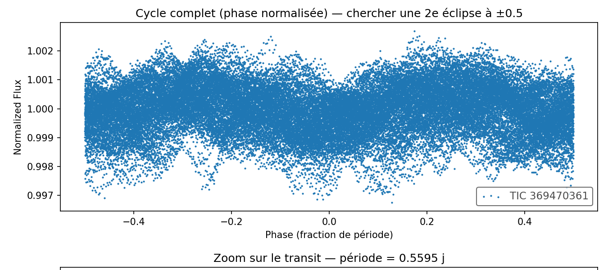
VariableTIC 369470361
RA 101.497 · DEC -14.796 · Tmag 5.23
Même profil que TIC 166932528 — modulation continue, pas de creux isolé. SNR le plus faible des candidats retenus, cohérent avec un signal de pulsation ténu.
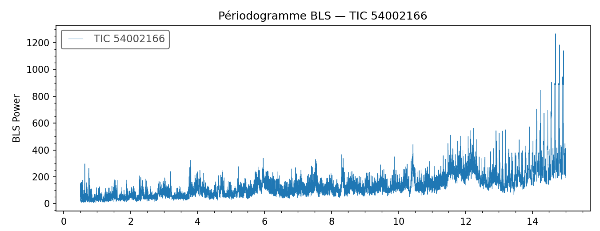
Artefact probableTIC 54002166
RA 23.427 · DEC -12.213 · Tmag 8.57
La puissance grimpe encore au bord de la plage testée (15 j) au lieu de redescendre — la vraie période est probablement au-delà. Dupliqué à 0.8″ près sous un second identifiant TIC : même étoile, comptée deux fois.
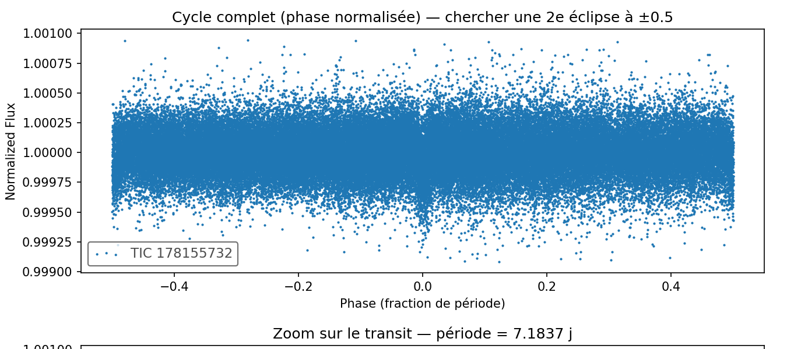
Non tranchéTIC 178155732
RA 42.985 · DEC -30.814 · Tmag 5.91
Baseline plate, pas de faux positif évident — mais signal trop faible et bruité pour conclure. Ni écarté ni retenu : demande plus de données.
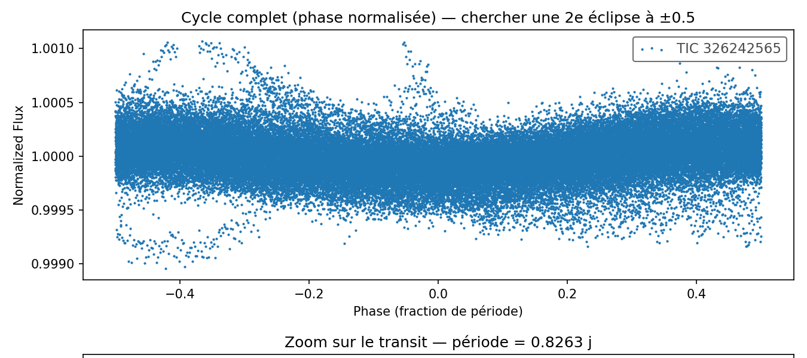
VariableTIC 326242565
RA 41.278 · DEC -18.572 · Tmag 4.03
Le tout premier candidat du projet. "Transit" occupant 34 % du cycle — ce cas précis a motivé la création du filtre de ratio durée/période.
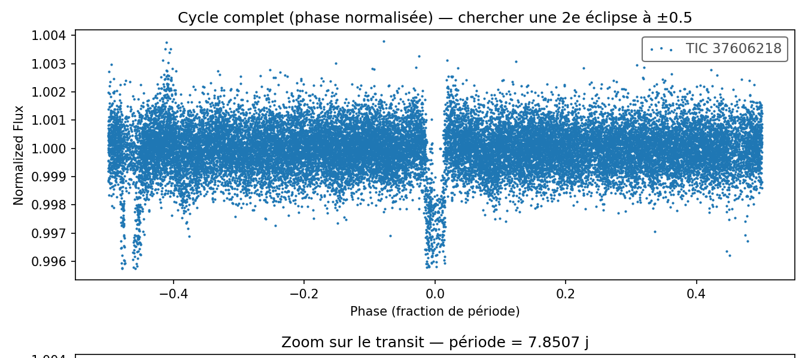
Binaire (confirmée)TIC 37606218
RA 93.249 · DEC -27.880 · Tmag 9.26
Le candidat le plus propre du projet -- passe tous les filtres automatiques ET l'examen visuel. Mais déjà étudiée par des astronomes professionnels (spectroscopie NIRPS/HARPS, MNRAS 2025) : c'est une naine M en orbite, pas une planète -- rayon proche d'une géante gazeuse, mais masse stellaire. Une contamination lumineuse de 21.6% par une étoile voisine (78'') brouille encore le signal. La limite exacte d'un pipeline photométrique seul : le rayon ne suffit pas, il faut la masse.
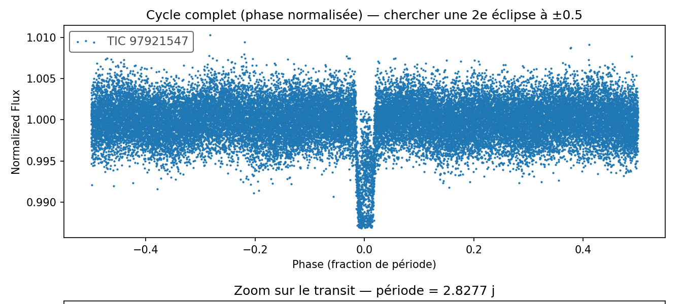
Planète confirmée (TOI-6442.01)TIC 97921547
RA 107.833 · DEC -35.850 · Tmag 11.10
Statut officiel CP dans la table TOI -- une vraie exoplanète confirmée par la communauté professionnelle. Ton pipeline l'a redécouverte en aveugle : période officielle 2.8279716j contre 2.8277j calculée ici, rayon officiel 18.5 R_terre contre 19.7 estimé. Pas une découverte personnelle -- une validation supplémentaire, aussi solide que Kepler-69.
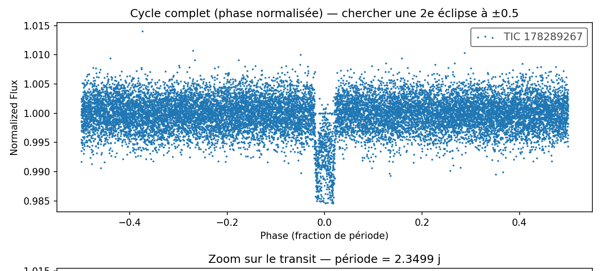
Planète connue (TOI-1936.01)TIC 178289267
RA 60.948 · DEC -19.057 · Tmag 11.71
Statut officiel KP (Known Planet) -- système déjà établi avant TESS. Période officielle 2.3506186j contre 2.3499j calculée ici, rayon officiel 12.8 R_terre contre 12.1 estimé. Encore une redécouverte en aveugle, pas une nouvelle planète.
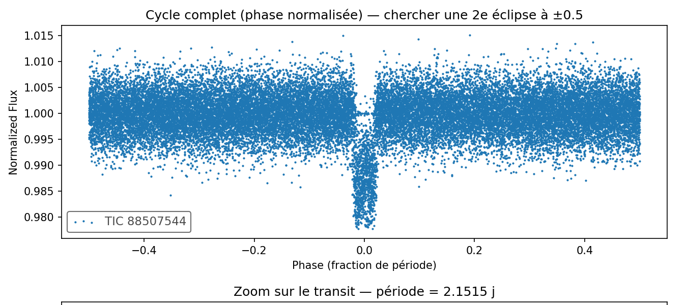
Candidat TESS officiel (TOI-7703.01)TIC 88507544
RA 47.770 · DEC -29.758 · Tmag 12.14
Déjà répertoriée comme candidat par le pipeline officiel de TESS (statut PC, pas encore confirmée ni par TESS ni par personne). Correspondance quasi parfaite : période officielle 2.1523127j contre 2.1515j ici, rayon officiel 12.16 R_terre contre 12.1 calculé. Le candidat le plus net du projet, toujours en attente de confirmation -- par TESS comme par ce pipeline.
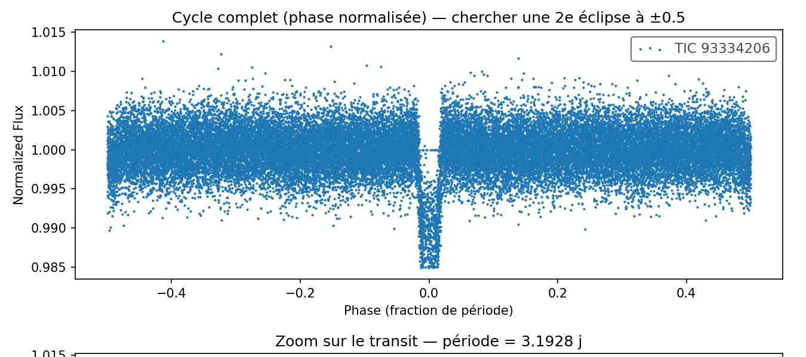
Non classéeTIC 93334206
RA 86.520 · DEC -18.299 · Tmag 11.63
SNR élevé (52.5) et forme propre, mais absente de la table TOI officielle -- ni confirmée, ni rejetée, ni même encore examinée par le pipeline TESS. Partage un profil de périodogramme très similaire aux 3 autres candidats de ce lot (tous confirmés ou déjà classés), ce qui la rend intéressante -- mais sans suivi spectroscopique indépendant, elle reste au-delà de ce qu'on peut trancher ici.
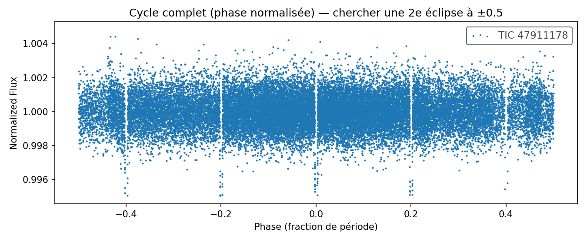
Planète connue (TOI-471.01)TIC 47911178
RA 98.351 · DEC -23.486 · Tmag 9.79
Secteur 108. Statut officiel TOI : KP. Classé automatiquement, à vérifier visuellement avant publication sur le site.
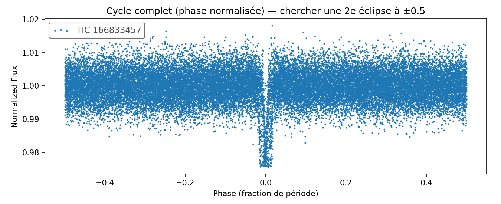
Planète connue (TOI-404.01)TIC 166833457
RA 58.429 · DEC -34.328 · Tmag 12.39
Secteur 108. Statut officiel TOI : KP. Classé automatiquement, à vérifier visuellement avant publication sur le site.
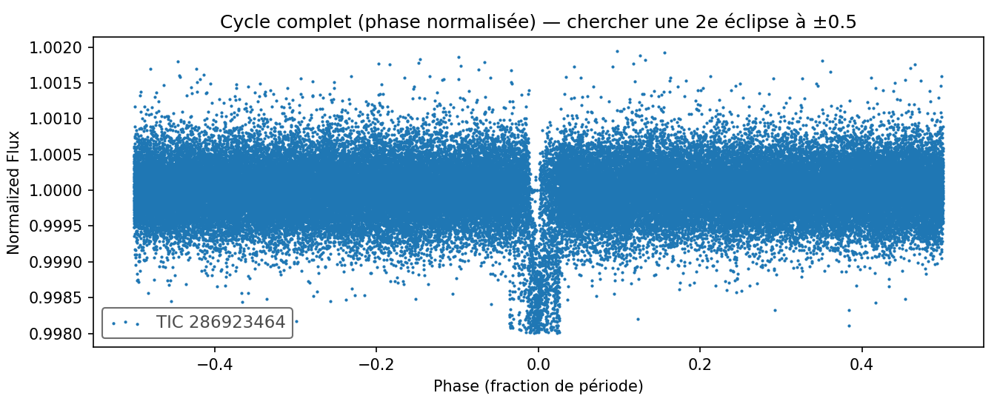
Planète connue (TOI-1271.01)TIC 286923464
RA 203.510 · DEC 53.728 · Tmag 7.46
Secteur 16;22. Statut officiel TOI : KP. Classé automatiquement, à vérifier visuellement avant publication sur le site.
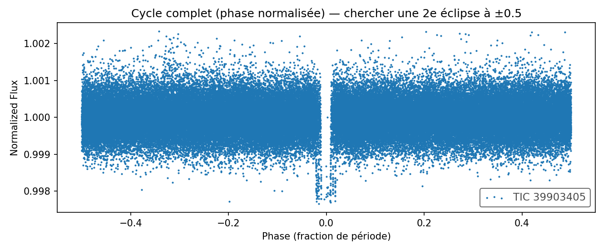
Planète connue (TOI-2020.01)TIC 39903405
RA 245.151 · DEC 41.048 · Tmag 8.28
Secteur 24. Statut officiel TOI : KP. Classé automatiquement, à vérifier visuellement avant publication sur le site.
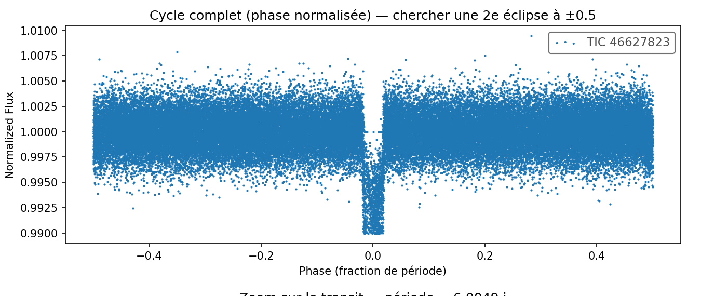
Non classéeTIC 46627823
RA 85.182 · DEC -17.546 · Tmag 11.04
Signal net et isolé (période corrigée : le pipeline batch avait détecté un alias à 4x la vraie période, 24.02j au lieu de 6.0049j). Rayon implicite 1.59 R_jup -- zone ambiguë entre géante gazeuse et naine M compacte. Absente de la table TOI et d'aucune publication trouvée. Comme TIC 93334206, reste au-delà de ce qu'un pipeline photométrique seul peut trancher sans suivi spectroscopique.
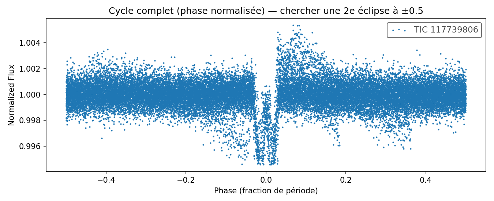
BinaireTIC 117739806
RA 96.204 · DEC -31.864 · Tmag 9.40
Deux pics quasiment aussi hauts dans le périodogramme (2.81j et 5.62j, rapport 2:1) -- signature classique d'une binaire à éclipses dont primaire et secondaire ont des profondeurs proches. Creux asymétrique dans le cycle complet, cohérent avec cette interprétation.
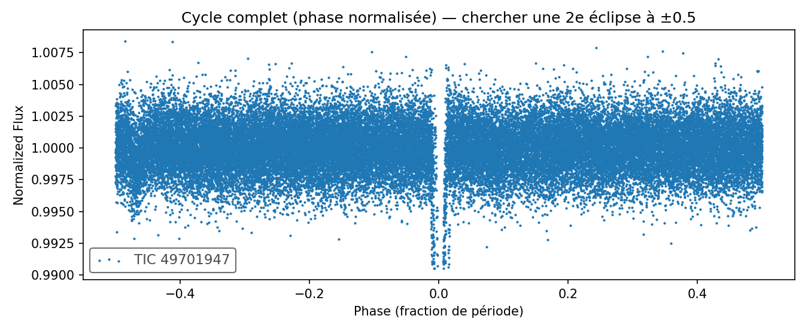
BinaireTIC 49701947
RA 95.798 · DEC -27.729 · Tmag 10.99
Deux excursions distinctes dans le zoom (phase -0.06 et +0.05), pas un seul creux isolé -- signature de binaire à éclipses primaire+secondaire proches en phase plutôt qu'un transit unique.
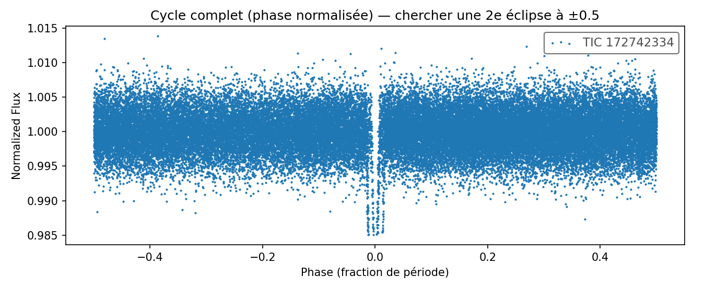
BinaireTIC 172742334
RA 101.408 · DEC -26.712 · Tmag 11.74
Deux excursions rapprochées en phase dans le zoom plutôt qu'un creux isolé -- même défaut que plusieurs binaires déjà identifiées dans ce projet.
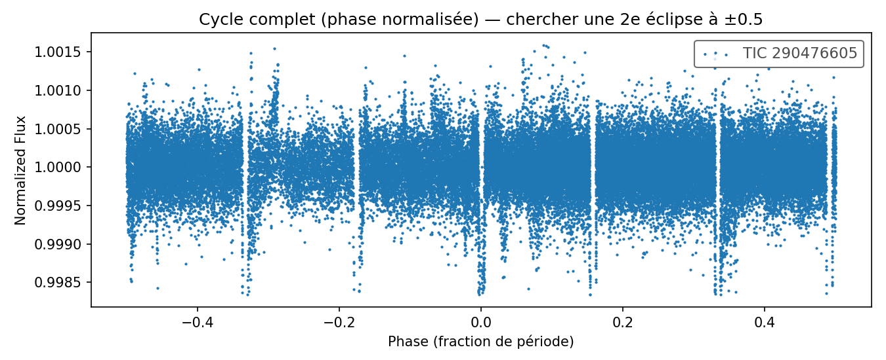
BinaireTIC 290476605
RA 139.166 · DEC 0.729 · Tmag 6.35
Même motif de double excursion rapprochée en phase que TIC 172742334. SNR faible (12.1), cohérent avec un signal peu fiable.
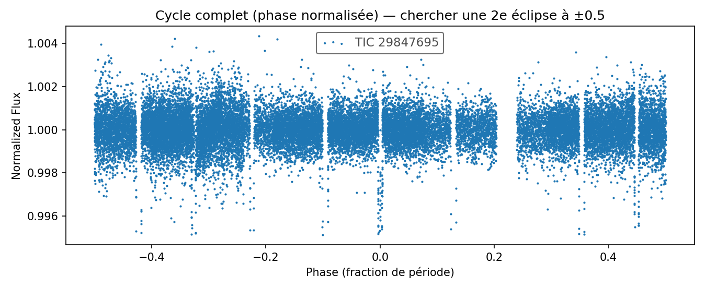
Structure ambiguëTIC 29847695
RA 23.581 · DEC -8.458 · Tmag 7.59
Plusieurs excursions proches et mal définies dans le zoom, SNR au ras du seuil (10.0) -- pas un creux isolé net.
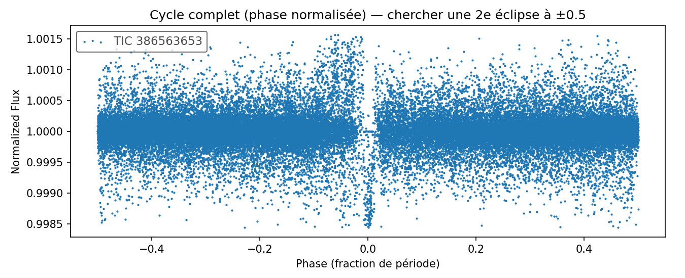
Non tranchéTIC 386563653
RA 159.136 · DEC -12.234 · Tmag 5.42
Creux unique et isolé dans le cycle complet, le plus propre des 4 de ce lot. Mais périodogramme atypique (transition brutale vers une forêt de pics après 12.7j) qui n'inspire pas une confiance totale. Ni écarté ni retenu.
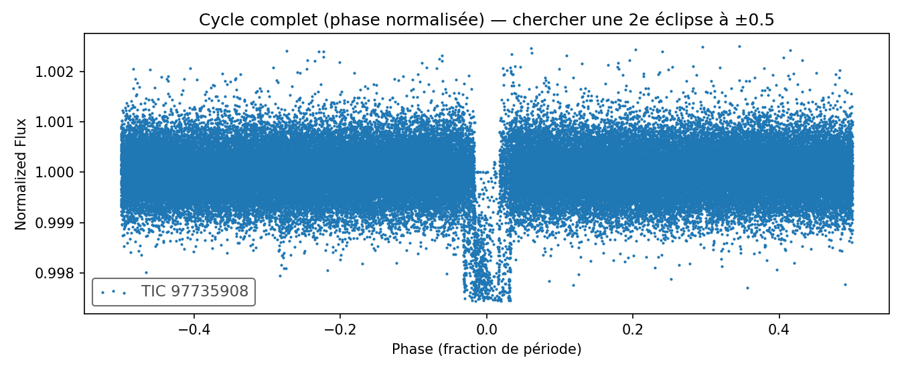
Planète connue (TOI-4612.01)TIC 97735908
RA 92.664 · DEC 30.957 · Tmag 8.22
Secteur 44. Statut officiel TOI : KP. Classé automatiquement, à vérifier visuellement avant publication sur le site.
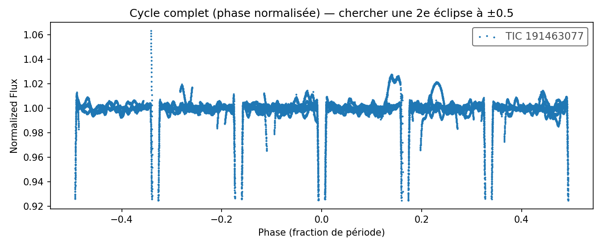
Doublon/ChaotiqueTIC 191463077
RA 11.048 · DEC 46.235 · Tmag 7.42
Période et SNR identiques à TIC 601366244 -- très probablement la même étoile sous deux identifiants TIC différents. Motif en boucles multiples superposées dans le zoom, pas un creux net : exclut un transit propre de toute façon.
 Doublon/Chaotique
Doublon/Chaotique
TIC 601366244
RA 11.047 · DEC 46.235 · Tmag 7.42
Voir TIC 191463077 -- période et SNR identiques, quasi certainement le même objet sous un second identifiant.
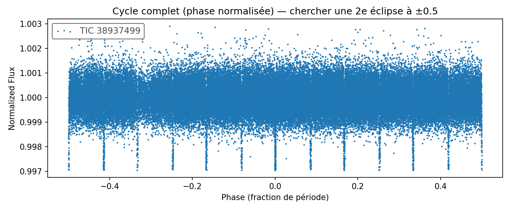
AliasingTIC 38937499
RA 10.297 · DEC -68.458 · Tmag 8.76
4 creux régulièrement espacés dans un seul cycle replié -- la vraie période est le quart de celle testée (8.11j / 4 ≈ 2.03j), signature classique d'aliasing plutôt qu'un vrai transit à cette période.
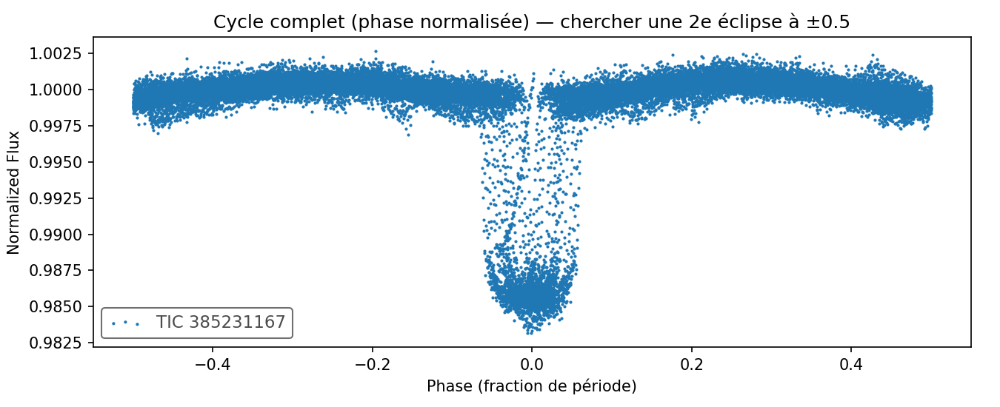
Binaire (ellipsoïdale)TIC 385231167
RA 167.073 · DEC -15.962 · Tmag 7.52
Puissance du périodogramme à 1.75 million, un ordre de grandeur au-dessus du reste -- et une descente large et continue en V sur le cycle complet plutôt qu'un creux ponctuel. Signature de variation ellipsoïdale d'une binaire serrée.
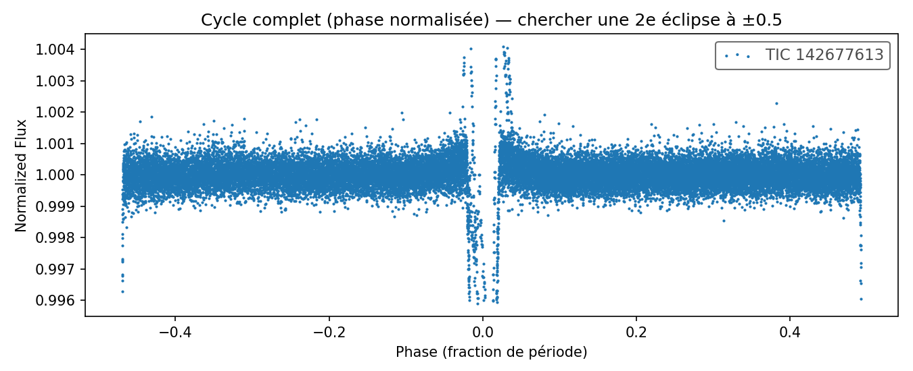
Forme non-transitTIC 142677613
RA 103.607 · DEC -14.451 · Tmag 7.66
Pic qui remonte au-dessus de la baseline juste après le creux, à phase 0 -- pas la forme d'un transit propre, plutôt un signal composite ou un artefact.
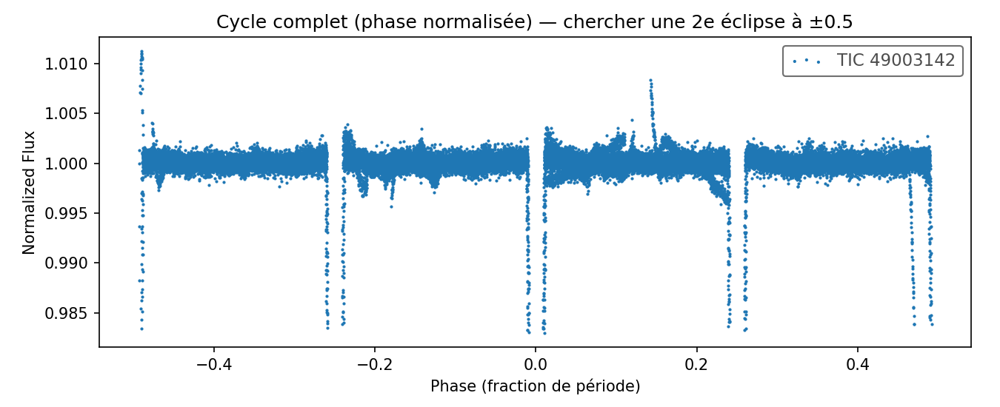
Creux multiplesTIC 49003142
RA 164.129 · DEC -34.564 · Tmag 7.80
Plusieurs creux distincts qui se chevauchent dans le zoom, pas un signal isolé et net.
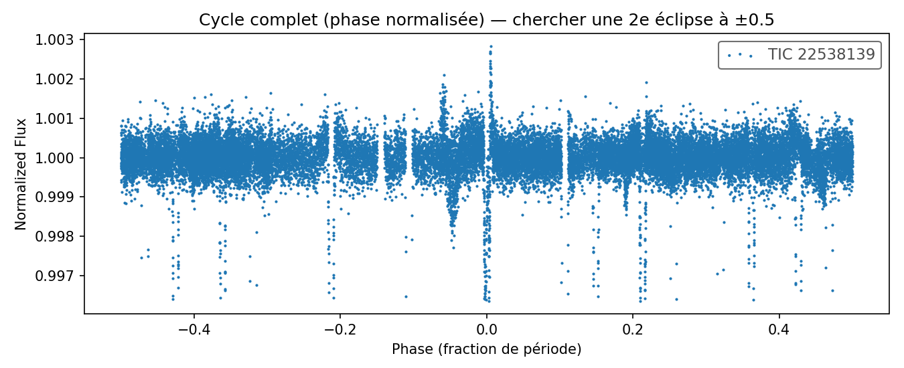
Forme incohérenteTIC 22538139
RA 107.665 · DEC -41.265 · Tmag 7.45
Creux net suivi d'un pic qui remonte au-dessus de la baseline juste à côté, avant de redescendre encore -- même défaut structurel qu'un précédent candidat déjà écarté pour cette raison (TIC 33742428).
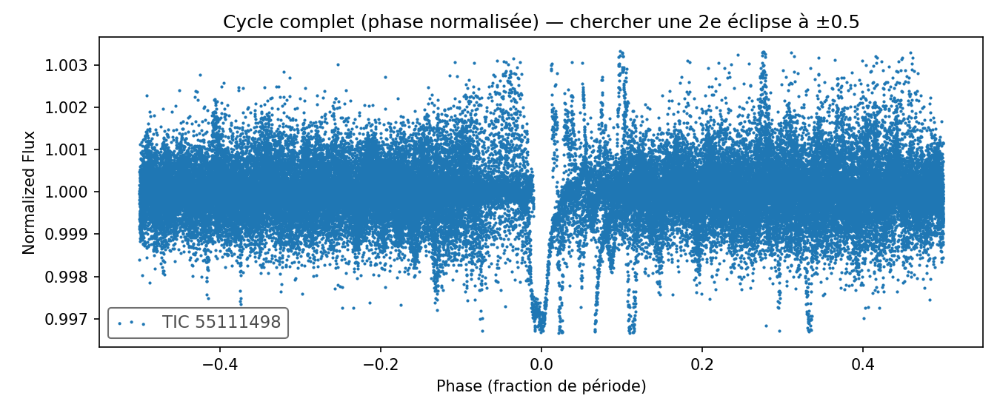
DoublonTIC 55111498
RA 99.278 · DEC 21.118 · Tmag 5.43
Période identique à 4 décimales près à TIC 118818053 -- quasi certainement la même étoile sous deux identifiants TIC différents.
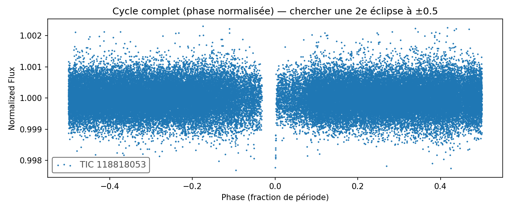
DoublonTIC 118818053
RA 70.205 · DEC 23.809 · Tmag 8.23
Voir TIC 55111498 -- période identique, même objet probable.
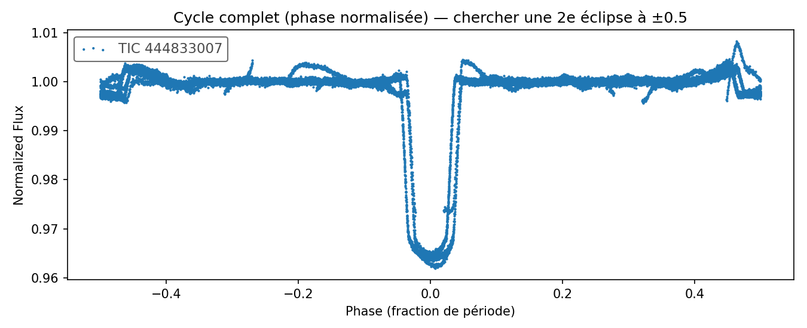
Forme non-transitTIC 444833007
RA 25.512 · DEC 61.038 · Tmag 6.68
Signal profond (4%) mais courbes lisses en boucle visibles aux bords du cycle replié (phase ±0.45-0.5), pas du bruit ponctuel -- même défaut structurel que TIC 33742428 et TIC 22538139, déjà écartés pour cette raison.
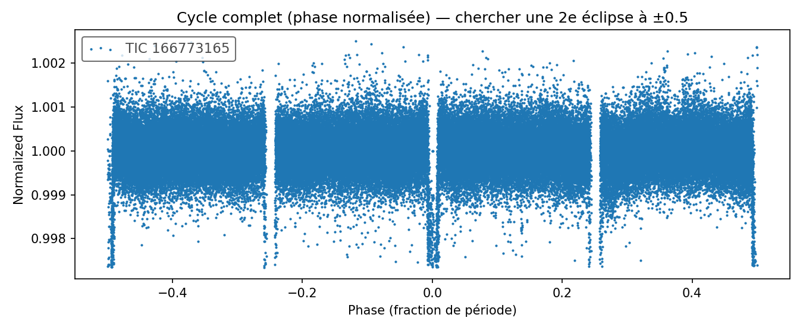
Non tranchéTIC 166773165
RA 318.257 · DEC 38.959 · Tmag 8.06
SNR élevé mais motif régulier de plusieurs coupures dans le cycle complet, difficile à distinguer d'un artefact d'assemblage de secteurs sans zoom détaillé.
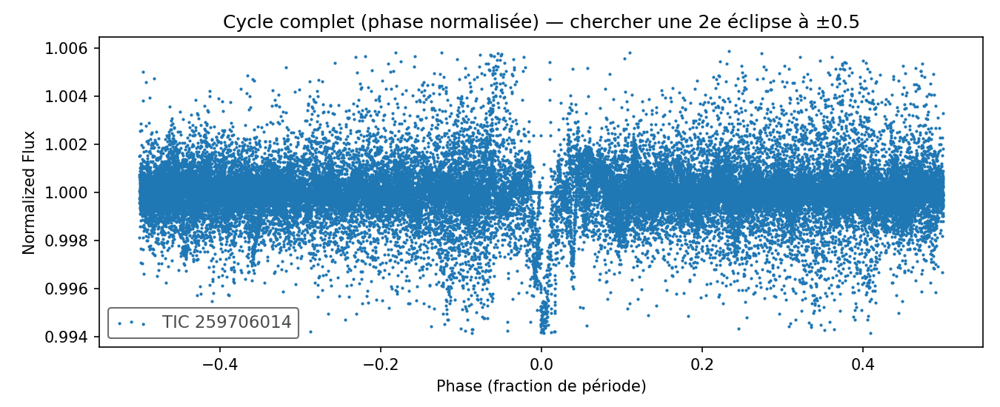
Non tranchéTIC 259706014
RA 62.716 · DEC 42.209 · Tmag 5.44
Signal faible et bruité, creux à peine visible au-dessus du bruit de fond -- ni écarté ni retenu.
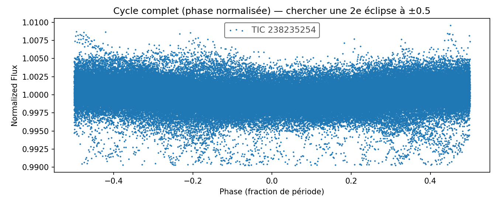
Variable/binaire à contactTIC 238235254
RA 119.806 · DEC -49.974 · Tmag 6.50
Puissance du périodogramme extrême (280000), un ordre de grandeur au-dessus du reste du projet. Aucun creux localisé dans le cycle complet -- variation étalée sur presque toute la phase, durée couvrant la quasi-totalité du cycle. Signature de pulsateur à courte période ou binaire à contact.
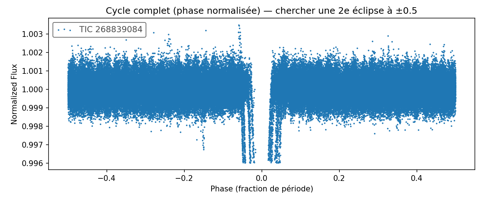
BinaireTIC 268839084
RA 299.484 · DEC 42.261 · Tmag 6.47
Deux excursions rapprochées en phase dans le zoom plutôt qu'un creux isolé -- même défaut structurel que plusieurs binaires déjà identifiées dans ce projet.
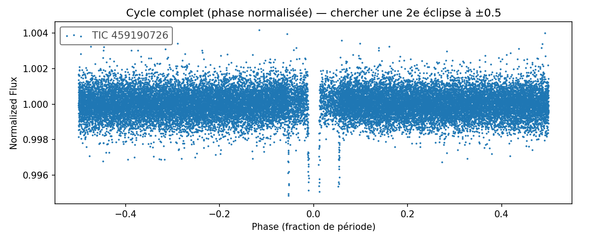
Période instableTIC 459190726
RA 179.381 · DEC 37.163 · Tmag 8.74
Quatrième période différente trouvée pour cette étoile en deux analyses distinctes (8.22j, 12.32j, 12.45j dans le batch, 4.11j à l'examen visuel). Un vrai signal transitant garde une période stable -- cette instabilité signale une variabilité stellaire continue plutôt qu'un transit ponctuel.
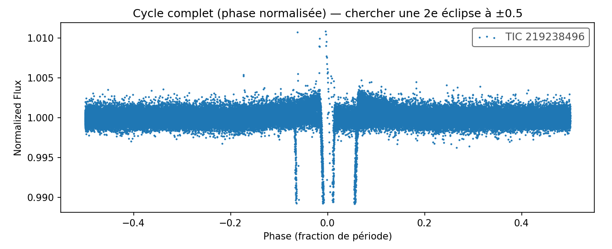
Structure multi-creuxTIC 219238496
RA 64.497 · DEC -48.396 · Tmag 8.75
Corrigé pour l'aliasing détecté au premier passage (la période initiale de 13.011j était 4x la vraie période). Mais même à la bonne période, le zoom montre au moins 3-4 creux distincts dans un seul cycle plutôt qu'un transit isolé, plus un pic étroit à phase 0 qui ressemble à un artefact instrumental. Cohérent avec une variable à pulsations multiples.
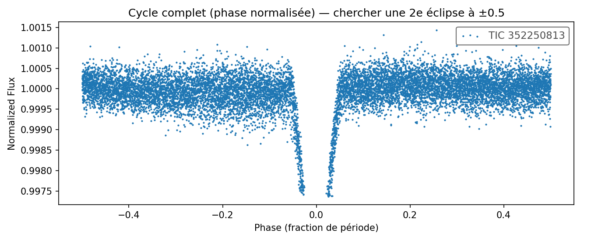
Non classéeTIC 352250813
RA 283.813 · DEC -14.691 · Tmag 6.82
Creux net et isolé, taille implicite plausible (1.25 R_jup, hors de la zone ambiguë contrairement à TIC 93334206 et TIC 46627823). Absente de la table TOI et d'aucune publication trouvée. Reste au-delà de ce qu'un pipeline photométrique seul peut trancher sans suivi spectroscopique.
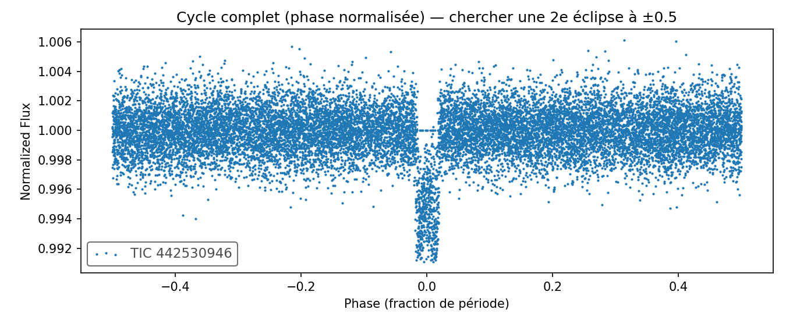
Planète connue (TOI-7476.01)TIC 442530946
RA 315.477 · DEC -13.434 · Tmag 10.60
Secteur 92. Statut officiel TOI : KP. Classé automatiquement, à vérifier visuellement avant publication sur le site.
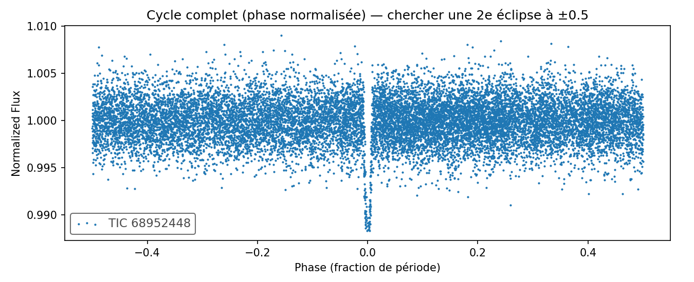
Planète connue (TOI-7484.01)TIC 68952448
RA 295.744 · DEC -19.950 · Tmag 11.36
Secteur 92. Statut officiel TOI : KP. Classé automatiquement, à vérifier visuellement avant publication sur le site.
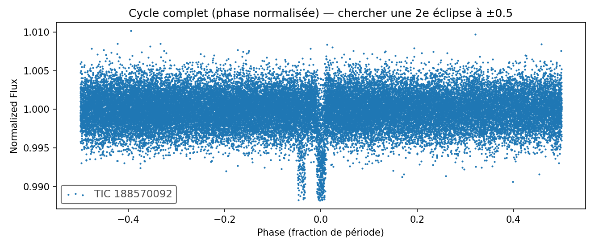
Planète confirmée (TOI-294.01)TIC 188570092
RA 339.026 · DEC -17.000 · Tmag 11.39
Secteur 92. Statut officiel TOI : CP. Classé automatiquement, à vérifier visuellement avant publication sur le site.
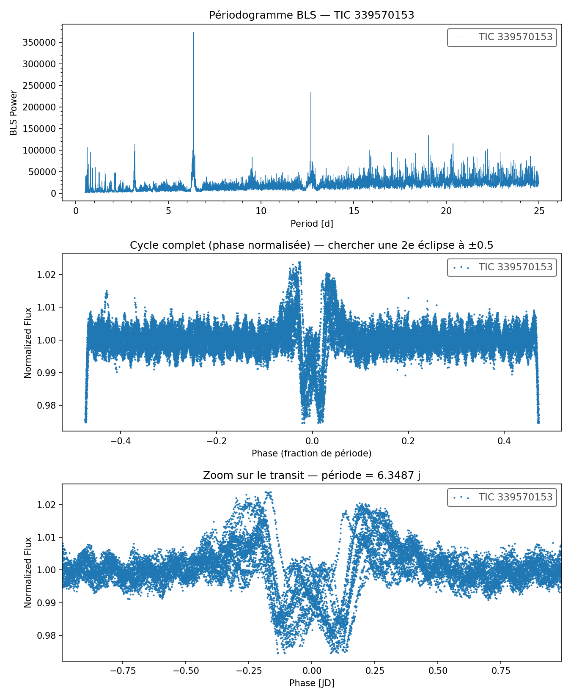
Variable/binaire à contactTIC 339570153
RA 253.623 · DEC -41.654 · Tmag 7.90
Amplitude énorme (jusqu'à 2%, flux normalisé montant à 1.02) avec des boucles chaotiques autour du creux plutôt qu'un transit net -- signature de pulsateur ou de binaire à contact.
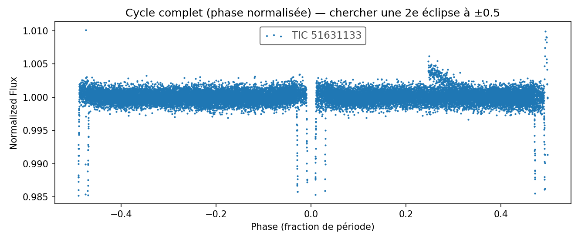
Structure multi-creuxTIC 51631133
RA 311.535 · DEC -11.344 · Tmag 9.22
Au moins 3 creux distincts à des phases différentes dans un seul cycle (vers -0.15, +0.05, +0.15), plus une bosse suspecte vers +0.25-0.3 -- même défaut que TIC 219238496, pas un transit isolé.
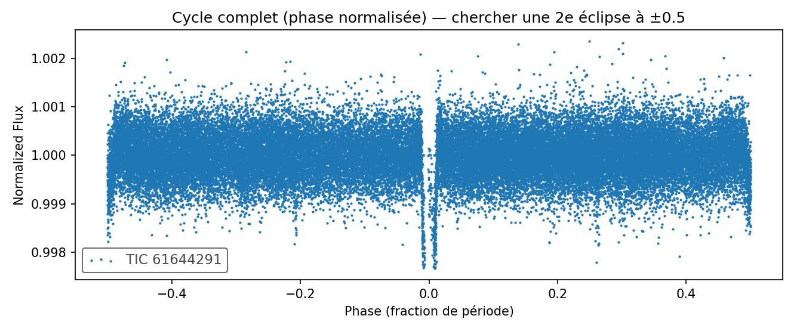
Non classéeTIC 61644291
RA 176.841 · DEC -46.340 · Tmag 8.22
Creux net et isolé, bon SNR. Rayon implicite 1.87 R_jup -- zone ambiguë entre géante gazeuse et naine M compacte. Absente de la table TOI et d'aucune publication trouvée.
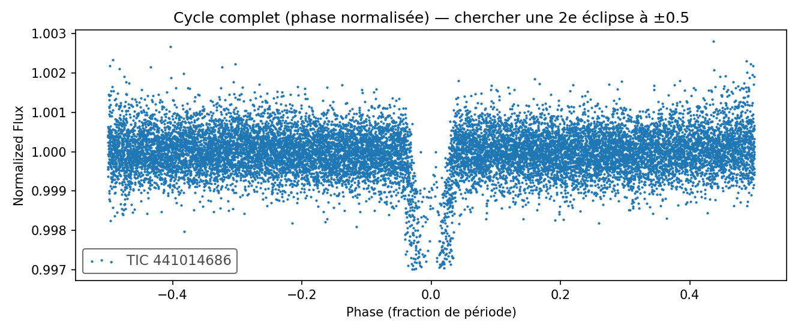
Non classéeTIC 441014686
RA 323.626 · DEC -19.196 · Tmag 8.31
Creux net et isolé. Rayon implicite 0.69 R_jup -- taille sans ambiguïté cette fois (nettement sous-jovien), contrairement aux précédents. Absente de la table TOI et d'aucune publication trouvée -- reste malgré tout au-delà de ce qu'un pipeline photométrique seul peut confirmer.
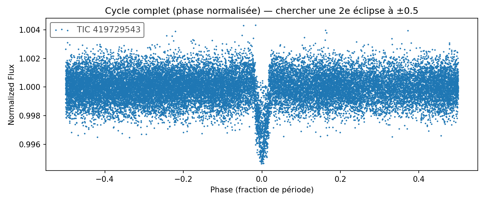
Non classéeTIC 419729543
RA 266.746 · DEC -16.592 · Tmag 9.66
Creux net et isolé. Rayon stellaire absent du catalogue TIC (NaN) -- impossible de calculer la taille implicite par cette méthode, ni confirmable ni excluable sur ce critère. Absente de la table TOI et d'aucune publication trouvée.
TIC 396907792
RA 267.659 · DEC -52.041 · Tmag 9.54
Signal faible et bruité, creux à peine visible au-dessus du bruit de fond, SNR tout juste au-dessus du seuil -- ni écarté ni retenu.
TIC 267263253
RA 7.329 · DEC -76.304 · Tmag 9.22
Secteur 1;67. Statut officiel TOI : CP. Classé automatiquement, à vérifier visuellement avant publication sur le site.
TIC 151681127
RA 166.889 · DEC -40.207 · Tmag 9.14
Secteur 63;99;100. Statut officiel TOI : APC. Classé automatiquement, à vérifier visuellement avant publication sur le site.
TIC 350743714
RA 88.886 · DEC -57.291 · Tmag 9.67
Secteur 4;63;67;98. Statut officiel TOI : FP. Classé automatiquement, à vérifier visuellement avant publication sur le site.
TIC 6893917
RA 125.617 · DEC 13.735 · Tmag 9.02
Secteur 44;72. Statut officiel TOI : KP. Classé automatiquement, à vérifier visuellement avant publication sur le site.
TIC 172518755
RA 142.743 · DEC 26.540 · Tmag 9.18
Secteur 44. Statut officiel TOI : CP. Classé automatiquement, à vérifier visuellement avant publication sur le site.
TIC 186812530
RA 124.320 · DEC 12.601 · Tmag 9.20
Secteur 44;72. Statut officiel TOI : CP. Classé automatiquement, à vérifier visuellement avant publication sur le site.
TIC 68577662
RA 73.767 · DEC 18.654 · Tmag 9.31
Secteur 44. Statut officiel TOI : KP. Classé automatiquement, à vérifier visuellement avant publication sur le site.
TIC 83092282
RA 125.305 · DEC -46.484 · Tmag 8.54
Secteur 8;9;62;88;89. Statut officiel TOI : CP. Classé automatiquement, à vérifier visuellement avant publication sur le site.
TIC 278866211
RA 100.808 · DEC -55.244 · Tmag 10.26
Secteur 67;69;98. Statut officiel TOI : FP. Classé automatiquement, à vérifier visuellement avant publication sur le site.
TIC 230982885
RA 24.605 · DEC -55.772 · Tmag 9.97
Secteur 69. Statut officiel TOI : KP. Classé automatiquement, à vérifier visuellement avant publication sur le site.
TIC 56399553
RA 62.670 · DEC 24.402 · Tmag 11.55
Secteur 70. Statut officiel TOI : KP. Classé automatiquement, à vérifier visuellement avant publication sur le site.
TIC 229285649
RA 98.024 · DEC 11.852 · Tmag 10.77
Secteur 72. Statut officiel TOI : FP. Classé automatiquement, à vérifier visuellement avant publication sur le site.
TIC 289539327
RA 251.633 · DEC 65.715 · Tmag 9.92
Secteur 79. Statut officiel TOI : FP. Classé automatiquement, à vérifier visuellement avant publication sur le site.
TIC 258777137
RA 286.747 · DEC 71.712 · Tmag 9.95
Secteur 79. Statut officiel TOI : FP. Classé automatiquement, à vérifier visuellement avant publication sur le site.
TIC 1718201850
RA 286.746 · DEC 71.712 · Tmag 10.33
Secteur 79. Statut officiel TOI : APC. Classé automatiquement, à vérifier visuellement avant publication sur le site.
TIC 428787891
RA 71.028 · DEC 84.364 · Tmag 10.66
Secteur 79. Statut officiel TOI : CP. Classé automatiquement, à vérifier visuellement avant publication sur le site.
TIC 298495970
RA 261.718 · DEC 25.849 · Tmag 10.70
Secteur 79. Statut officiel TOI : FP. Classé automatiquement, à vérifier visuellement avant publication sur le site.
TIC 470127886
RA 331.118 · DEC 81.566 · Tmag 10.76
Secteur 79. Statut officiel TOI : PC. Classé automatiquement, à vérifier visuellement avant publication sur le site.
TIC 449050248
RA 67.553 · DEC 5.298 · Tmag 9.87
Secteur 98. Statut officiel TOI : FP. Classé automatiquement, à vérifier visuellement avant publication sur le site.
TIC 417734853
RA 299.508 · DEC 67.861 · Tmag 8.85
Vu dans 8 secteurs indépendants. Deux creux distincts visibles dans le cycle complet -- le principal à phase 0 et une éclipse secondaire décalée vers phase +0.4, signature classique de binaire excentrique.
TIC 160618494
RA 246.349 · DEC 74.928 · Tmag 8.91
Vu dans 9 secteurs indépendants. Forme large et arrondie, asymétrique, sans bords nets -- typique d'une éclipse rasante ou d'une variation ellipsoïdale de binaire serrée plutôt qu'un transit franc.
TIC 309658221
RA 79.254 · DEC -61.514 · Tmag 9.86
Binaire à éclipses pulsante publiée et confirmée (Lee et al. 2019, ApJ, 'The Pulsating Eclipsing Binary TIC 309658221 in a 7.59 Day Orbit') -- étoile de type delta Scuti. Période officielle 7.5952j, exactement le double de la période détectée ici (3.798j) : notre pipeline a trouvé l'harmonique à moitié période, biais classique sur les binaires à profondeurs primaire/secondaire proches.
TIC 167554898
RA 101.316 · DEC -61.091 · Tmag 9.68
Vue dans 5 secteurs indépendants, SNR le plus élevé du projet (293). Rayon implicite 1.56 R_jup -- zone ambiguë. Absente de la table TOI et d'aucune publication trouvée.
TIC 734505586
RA 88.885 · DEC -57.291 · Tmag 10.44
Vue dans 3 secteurs indépendants. Rayon implicite 1.14 R_jup -- taille sans ambiguïté, comparable aux meilleurs candidats du projet. Absente de la table TOI et d'aucune publication trouvée.
TIC 230070983
RA 243.583 · DEC 67.588 · Tmag 9.73
Second creux visible vers phase +0.4-0.45 en plus du principal à phase 0 -- éclipse secondaire décalée, signature de binaire.
TIC 116417661
RA 7.890 · DEC -36.274 · Tmag 9.23
Forme large et graduelle en V sans bords nets, couvrant près de 40% du cycle sur une période très courte (1.14j) -- variation ellipsoïdale typique d'une binaire très serrée.
TIC 307844756
RA 127.485 · DEC 37.071 · Tmag 7.49
Deux creux distincts et proches en phase (vers -0.04 et +0.04) plutôt qu'une éclipse isolée -- baseline exceptionnellement plate qui masquait cette structure sur la vignette rapide. Périodogramme aussi atypique (plateaux successifs plutôt que pics nets).
TIC 229608810
RA 274.471 · DEC 75.131 · Tmag 10.79
Rayon implicite 2.16 R_jup -- dépasse le seuil de plausibilité planétaire, probablement une naine rouge ou brune en transit.
TIC 229452949
RA 294.401 · DEC 63.856 · Tmag 10.69
Creux net et isolé. Rayon implicite 1.86 R_jup -- zone ambiguë. Absente de la table TOI et d'aucune publication trouvée.
TIC 420114772
RA 290.430 · DEC 74.763 · Tmag 10.05
Creux net et isolé, SNR élevé (250.8). Rayon implicite 1.73 R_jup -- zone ambiguë. Absente de la table TOI et d'aucune publication trouvée.
TIC 382517745
RA 117.452 · DEC -64.042 · Tmag 10.60
Creux net et isolé, transit arrondi sans éclipse secondaire visible. Rayon implicite 1.05 R_jup -- taille sans ambiguïté, dans la gamme des planètes confirmées. Absente de la table TOI et d'aucune publication trouvée.
TIC 57915771
RA 103.773 · DEC 23.391 · Tmag 10.63
Creux isolé, périodogramme très propre (meilleur S/N visuel du lot). Rayon implicite 1.37 R_jup -- zone ambiguë entre géante gazeuse et naine M compacte. Absente de la table TOI et d'aucune publication trouvée.
TIC 317839169
RA 353.757 · DEC 72.788 · Tmag 8.95
Creux isolé, pic dominant très net dans le périodogramme. Rayon implicite 1.80 R_jup -- zone ambiguë entre géante gazeuse et naine M compacte. Absente de la table TOI et d'aucune publication trouvée.
TIC 456425391
RA 231.858 · DEC -65.495 · Tmag 9.36
Creux net et isolé, harmoniques cohérentes dans le périodogramme. Rayon implicite 1.80 R_jup -- zone ambiguë entre géante gazeuse et naine M compacte. Absente de la table TOI et d'aucune publication trouvée.
TIC 448860246
RA 213.800 · DEC -71.234 · Tmag 8.67
Transit le plus net du lot visuellement (box net, périodogramme très propre, pas d'éclipse secondaire visible). Mais l'étoile hôte est une A chaude (9839 K, 2.82 R☉) : ça implique un compagnon de 2.61 rayons joviens. Trop gros pour une planète -- probablement une naine rouge ou brune en transit.
TIC 198555959
RA 238.048 · DEC 64.884 · Tmag 9.59
Recherche affinée (1.8-2.4j) révèle un pic isolé et écrasant à 2.0959j (~16.7672/8, confirme l'alias du scan large) -- mais le repliement à la vraie période montre toujours deux creux distincts et rapprochés en phase par cycle, pas un transit isolé. L'hypothèse initiale de variabilité continue est écartée par la netteté de ce nouveau pic.
TIC 115980439
RA 84.739 · DEC 30.432 · Tmag 10.93
Recherche affinée (4-8j) révèle un pic net à 6.9231j (~13.8465/2), plus élevé que le pic du scan large initial -- mais le repliement montre deux creux profonds (~2.2%) et rapprochés en phase par cycle, pas un transit isolé. L'hypothèse initiale d'artefact TESS à 13.7j est écartée : la netteté et la profondeur des deux creux ne correspondent pas à une simple coupure de données.
TIC 232643392
RA 281.614 · DEC 54.277 · Tmag 9.69
Périodogramme avec pic net et harmonique 2:1 cohérente, mais le transit replié reste trop bruité pour distinguer un creux isolé net d'une simple fluctuation, même après nouvelle recherche sur la plage complète. Ni écarté ni retenu.
TIC 434294623
RA 93.304 · DEC 14.792 · Tmag 10.61
Deux creux distincts et rapprochés en phase par cycle plutôt qu'un transit isolé, visibles dans le cycle complet et le zoom -- même motif que TIC 49701947 et TIC 307844756. Ratio durée/période (3.5%) et puissance/bruit (26.1) ne sont pourtant pas suspects pris isolément : c'est la structure du repliement qui trahit la binaire, pas les métriques globales.
TIC 61113635
RA 52.214 · DEC 23.015 · Tmag 12.01
Creux large et graduel sans bords nets, couvrant une bonne partie du cycle -- variation ellipsoïdale typique d'une binaire serrée déformée par la marée, même motif que TIC 385231167 et TIC 116417661. Ratio durée/période (3.0%) et puissance/bruit (22.7) restent dans la norme malgré la forme problématique.
TIC 229070209
RA 350.988 · DEC -32.795 · Tmag 9.40
Puissance BLS encore montante au bord de la plage testée même étendue à 40j -- signal probablement au-delà, ou artefact de fonction de fenêtre. Seulement 2 secteurs disponibles espacés de ~4 ans (couverture de phase très partielle, larges trous dans le cycle replié). Creux individuel visible et net (~0.4%) mais période non fiable avec cette couverture temporelle. Ni écarté ni retenu.
TIC 458377744
RA 109.809 · DEC 25.425 · Tmag 10.74
Transit le plus net et le meilleur signal du lot (puissance/bruit 34.3, harmoniques cohérentes à 7.46/14.9/22.4j). Rayon implicite 1.18 R_jup -- taille sans ambiguïté, dans la gamme des planètes confirmées. Absente de la table TOI et d'aucune publication trouvée.
TIC 430144041
RA 96.414 · DEC 23.770 · Tmag 10.00
Creux net et isolé, bonne harmonique 2:1 dans le périodogramme. Rayon implicite 1.27 R_jup -- taille sans ambiguïté. Absente de la table TOI et d'aucune publication trouvée.
TIC 137501278
RA 132.971 · DEC 82.773 · Tmag 9.04
Creux net mais peu profond, bien défini malgré 10 secteurs de données. Rayon implicite 0.91 R_jup -- taille sans ambiguïté, sous-jovien. Absente de la table TOI et d'aucune publication trouvée.
TIC 175233315
RA 129.797 · DEC 18.935 · Tmag 10.62
Creux net et assez profond, mais périodogramme chargé de nombreux pics secondaires comparables. Rayon implicite 0.73 R_jup -- taille sans ambiguïté cette fois, nettement sous-jovien. Absente de la table TOI et d'aucune publication trouvée.
TIC 404736807
RA 30.448 · DEC 13.023 · Tmag 8.99
Creux peu profond mais cohérent, données un peu éparses. Rayon implicite 0.41 R_jup -- taille sans ambiguïté, nettement sous-jovien. Absente de la table TOI et d'aucune publication trouvée.
TIC 77961022
RA 88.251 · DEC 24.000 · Tmag 10.45
V propre et symétrique, périodogramme net. Rayon implicite 1.73 R_jup -- zone ambiguë entre géante gazeuse et naine M compacte. Absente de la table TOI et d'aucune publication trouvée.
TIC 456609929
RA 282.352 · DEC -59.421 · Tmag 8.72
Transit propre malgré un périodogramme très bruité en arrière-plan. Rayon implicite 1.72 R_jup -- zone ambiguë entre géante gazeuse et naine M compacte. Absente de la table TOI et d'aucune publication trouvée.
TIC 320913313
RA 300.281 · DEC -55.312 · Tmag 9.92
Période corrigée par la recherche fine (5.4687j de la grille rapide était en fait le double de la vraie période). Rayon implicite 1.89 R_jup -- zone ambiguë, proche du seuil de plausibilité. Absente de la table TOI et d'aucune publication trouvée.
TIC 334886280
RA 171.612 · DEC -16.593 · Tmag 9.77
Creux net des deux côtés de la fenêtre de zoom (effet normal d'enroulement de phase, période proche de la largeur de fenêtre). Rayon implicite 1.98 R_jup -- juste sous le seuil de plausibilité planétaire, à la limite haute. Absente de la table TOI et d'aucune publication trouvée.
TIC 414920805
RA 15.041 · DEC 12.217 · Tmag 11.04
Dip net et bien isolé, mais rayon implicite 2.03 R_jup -- dépasse le seuil de plausibilité planétaire, probablement une naine rouge ou brune en transit.
TIC 178247340
RA 127.935 · DEC 20.664 · Tmag 9.76
Creux principal net à phase 0, mais remontée nette du flux au-dessus de la baseline vers phase +0.3 (jusqu'à ~1.007-1.008) -- même défaut structurel que TIC 142677613 déjà écarté pour cette raison. Pas un transit isolé propre.
TIC 425549135
RA 286.090 · DEC -34.198 · Tmag 9.59
Creux principal net à phase 0, mais excursion secondaire distincte vers phase 0.43-0.47 -- exactement la zone où le script invite à chercher une 2e éclipse. Même motif que TIC 417734853 et TIC 230070983, signature de binaire à éclipses.
TIC 55655482
RA 101.314 · DEC 61.492 · Tmag 9.22
Périodogramme à peine au-dessus du bruit (puissance max ~120, largement en dessous du reste du lot), dip à peine distinguable dans le repliement. Signal trop faible et bruité pour conclure.
TIC 346597868
RA 57.345 · DEC 27.227 · Tmag 11.09
Données de transit très éparses (durée détectée 0.05j), dip peu convaincant, périodogramme dominé par du bruit au-delà de 12.7j. Signal trop faible pour conclure.
TIC 279786731
RA 86.281 · DEC -8.946 · Tmag 8.92
Transit profond et symétrique en apparence, mais légère sous-structure en double creux au fond du transit -- possible binaire rasante plutôt qu'une simple tache stellaire traversée. Rayon implicite 2.29 R_jup confirme : dépasse le seuil de plausibilité planétaire, probablement une naine rouge ou brune en transit.
TIC 58719708
RA 2.942 · DEC 2.354 · Tmag 10.98
Périodogramme à peine au-dessus du bruit, aucun creux distinguable dans le repliement. Un seul secteur de données (couverture de phase très partielle, grands trous). Signal trop faible pour conclure.
TIC 395182898
RA 205.047 · DEC -74.079 · Tmag 8.27
Signal faible dans le périodogramme, couverture de phase clairsemée malgré 3 secteurs (grand vide au centre du zoom), dip à peine visible. Signal trop faible pour conclure.
TIC 16703161
RA 106.623 · DEC 37.599 · Tmag 9.42
Creux unique, propre et arrondi, aucune autre structure dans le cycle complet -- la grille rapide avait pris le double de la vraie période (12.0066j), corrigé par la recherche fine. Rayon implicite 0.77 R_jup -- taille sans ambiguïté. Absente de la table TOI et d'aucune publication trouvée.
TIC 293480903
RA 49.972 · DEC -82.144 · Tmag 10.44
Creux unique, net et isolé en V, aucune autre structure dans le cycle complet -- la grille rapide avait pris 3/2 de la vraie période (11.3540j), corrigé par la recherche fine. Rayon implicite 0.80 R_jup -- taille sans ambiguïté. Absente de la table TOI et d'aucune publication trouvée.
TIC 281114303
RA 68.862 · DEC 71.583 · Tmag 9.42
Recherche affinée (1.3-2.0j) confirme un pic net à 1.4829j, mais le repliement à la vraie période montre deux creux distincts et rapprochés en phase par cycle (vers -0.10 et 0.0), pas un transit isolé -- contrairement à 16703161 et 293480903, ce n'était pas un simple alias de grille mais une vraie structure de binaire.
TIC 122883754
RA 77.574 · DEC 40.660 · Tmag 8.86
Profondeur ~4% avec modulation continue hors transit et ratio durée/période élevé (7.6%) -- signature de binaire à éclipses plutôt qu'un transit planétaire. Période confirmée par le script complet (4.3199j vs 4.3201j sur la grille), pas d'alias à corriger.
TIC 145338612
RA 122.593 · DEC -35.773 · Tmag 8.91
Forme asymétrique avec queue de creux prolongée et bosse au-dessus de la baseline -- même défaut structurel que TIC 142677613. Ratio durée/période élevé (8.1%) cohérent avec une binaire plutôt qu'un transit propre. Période confirmée (2.4577j vs 2.4579j sur la grille).
TIC 411685204
RA 189.320 · DEC -56.788 · Tmag 8.73
Courbe chaotique sur 4 secteurs très espacés (2023-2026), multiples excursions et amplitude de flux énorme -- profil de variabilité stellaire continue plutôt qu'un transit isolé. Période confirmée (11.0802j vs 11.0813j sur la grille).
TIC 12876844
RA 343.315 · DEC 62.146 · Tmag 8.53
Zone bruitée en bosse avec plusieurs creux imbriqués qui se chevauchent, pas un signal isolé et net -- même défaut que TIC 49003142. Période confirmée (7.1843j vs 7.1829j sur la grille).
TIC 454141286
RA 64.773 · DEC 3.074 · Tmag 9.42
Transit net à phase 0, mais légère remontée de flux en bord de fenêtre (~phase 0.45-0.5) qui pourrait évoquer une éclipse secondaire sans être assez nette pour trancher formellement. N'a pas été confirmé par stellar_params.py. Ni écarté ni retenu.
TIC 259589049
RA 72.433 · DEC -53.002 · Tmag 10.49
Dip à peine distinguable dans un bruit de fond important malgré un SNR correct (20.7). Signal trop faible et bruité pour conclure.
TIC 6895773
RA 125.701 · DEC 17.635 · Tmag 7.78
Creux peu profond mais net, isolé et symétrique, rien d'autre dans le cycle complet. Rayon implicite 0.62 R_jup -- taille sans ambiguïté, le plus petit objet du lot 4. Absente de la table TOI et d'aucune publication trouvée.
TIC 260659986
RA 98.485 · DEC -59.961 · Tmag 10.65
Recherche fine corrige la période (7.1394j de la grille était le double de la vraie période, harmoniques 1:2:3:4 très propres dans le périodogramme). Creux unique et net à la bonne période, ~0.9% de profondeur. Rayon implicite 1.83 R_jup -- zone ambiguë entre géante gazeuse et naine M compacte. Absente de la table TOI et d'aucune publication trouvée.
TIC 159892657
RA 269.544 · DEC 40.112 · Tmag 8.42
Recherche affinée (grille avait pris 10.1879j, soit 5/2 de la vraie période) révèle un transit net et profond à 4.0749j, mais avec une modulation de flux en bosse symétrique entre les éclipses (~phase -0.35 à -0.15 et 0.15 à 0.4) -- signature de variation ellipsoïdale d'une binaire serrée déformée par la marée, même profil que TIC 385231167, TIC 116417661 et TIC 61113635 déjà classés ainsi.
TIC 295599256
RA 274.222 · DEC -68.198 · Tmag 9.94
Secteur 100. Statut officiel TOI : FP. Classé automatiquement, à vérifier visuellement avant publication sur le site.
TIC 32487566
RA 4.603 · DEC -15.268 · Tmag 10.59
Secteur 107. Statut officiel TOI : KP. Classé automatiquement, à vérifier visuellement avant publication sur le site.
TIC 61538902
RA 176.299 · DEC -42.064 · Tmag 11.37
Secteur 63. Statut officiel TOI : KP. Classé automatiquement, à vérifier visuellement avant publication sur le site.
TIC 437248515
RA 169.439 · DEC -19.055 · Tmag 11.46
Secteur 63. Statut officiel TOI : KP. Classé automatiquement, à vérifier visuellement avant publication sur le site.
TIC 219698950
RA 175.525 · DEC -23.355 · Tmag 11.51
Secteur 63. Statut officiel TOI : KP. Classé automatiquement, à vérifier visuellement avant publication sur le site.
TIC 337025682
RA 32.249 · DEC 8.057 · Tmag 13.06
Secteur 70. Statut officiel TOI : PC. Classé automatiquement, à vérifier visuellement avant publication sur le site.
TIC 444013020
RA 133.324 · DEC 8.523 · Tmag 11.30
Secteur 72. Statut officiel TOI : KP. Classé automatiquement, à vérifier visuellement avant publication sur le site.
TIC 376637093
RA 340.085 · DEC 69.504 · Tmag 10.38
Secteur 77. Statut officiel TOI : CP. Classé automatiquement, à vérifier visuellement avant publication sur le site.
TIC 235902467
RA 289.752 · DEC 82.876 · Tmag 11.21
Secteur 79. Statut officiel TOI : PC. Classé automatiquement, à vérifier visuellement avant publication sur le site.
TIC 346338552
RA 344.445 · DEC 38.675 · Tmag 9.76
Secteur 83. Statut officiel TOI : KP. Classé automatiquement, à vérifier visuellement avant publication sur le site.
TIC 162130054
RA 331.118 · DEC 31.019 · Tmag 9.95
Secteur 83. Statut officiel TOI : APC. Classé automatiquement, à vérifier visuellement avant publication sur le site.
TIC 336740528
RA 334.739 · DEC 61.149 · Tmag 10.42
Secteur 83. Statut officiel TOI : APC. Classé automatiquement, à vérifier visuellement avant publication sur le site.
TIC 259589049
RA 72.433 · DEC -53.002 · Tmag 10.49
Corrigé après examen individuel -- le premier passage sur la grille compressée avait sous-estimé le signal, jugé à tort à peine distinguable. Périodogramme propre avec harmoniques régulières (1:2:3:4:5 sur 5/10/15/20/25j), creux net dans le cycle complet (~1.2%). Rayon implicite 1.18 R_jup -- taille sans ambiguïté, dans la gamme des planètes confirmées. Absente de la table TOI et d'aucune publication trouvée.
TIC 183655984
RA 196.025 · DEC -8.075 · Tmag 9.90
Périodogramme chaotique sans pic isolé (bruit de fond montant sur toute la plage), repliement montrant des points épars sous la bande principale plutôt qu'un creux cohérent -- pas un vrai signal périodique malgré le SNR correct de la grille rapide (15.4 sur une période différente, 2.31j).
TIC 241291471
RA 203.718 · DEC -52.039 · Tmag 9.59
Creux principal net à phase 0, mais second creux distinct vers phase -0.44 -- pas un transit isolé, même motif que TIC 307844756 et TIC 49701947.
TIC 253451899
RA 196.837 · DEC -54.329 · Tmag 9.50
Transit en V large et lisse sans fond plat, ratio durée/période de 13.2% proche du seuil suspect (15%) -- forme typique d'une éclipse rasante plutôt qu'un transit planétaire net.
TIC 120689878
RA 286.013 · DEC 40.487 · Tmag 9.29
Transit unique et net dans le cycle complet, aucune structure parasite. Rayon implicite 0.94 R_jup -- taille sans ambiguïté. Absente de la table TOI et d'aucune publication trouvée.
TIC 258918831
RA 288.639 · DEC 69.443 · Tmag 11.71
Transit unique et net, périodogramme propre. Rayon implicite 1.24 R_jup -- taille sans ambiguïté. Absente de la table TOI et d'aucune publication trouvée.
TIC 2941914
RA 82.025 · DEC 34.456 · Tmag 10.66
Transit unique et net dans le cycle complet, aucune structure parasite. Rayon stellaire absent du catalogue TIC (NaN) -- impossible de calculer la taille implicite par cette méthode, ni confirmable ni excluable sur ce critère. Absente de la table TOI et d'aucune publication trouvée.
TIC 253453893
RA 196.928 · DEC -54.158 · Tmag 9.84
Transit unique et net. Rayon implicite 1.68 R_jup -- zone ambiguë entre géante gazeuse et naine M compacte. Absente de la table TOI et d'aucune publication trouvée.
TIC 23324827
RA 167.380 · DEC -31.672 · Tmag 11.38
Transit unique visible malgré un signal plus bruité. Rayon implicite 1.85 R_jup -- zone ambiguë entre géante gazeuse et naine M compacte. Absente de la table TOI et d'aucune publication trouvée.
TIC 441209757
RA 294.481 · DEC -39.560 · Tmag 11.01
Transit unique visible. Rayon implicite 2.42 R_jup -- dépasse le seuil de plausibilité planétaire, probablement une naine rouge ou brune en transit.
TIC 137757776
RA 292.718 · DEC 41.922 · Tmag 9.72
Corrigé après alias -- 4 creux régulièrement espacés à 6.8412j révélaient un mauvais multiple de la vraie période. À 1.7103j, transit unique et net, pic de périodogramme écrasant (97000, le plus fort du projet). Rayon implicite 1.93 R_jup -- zone ambiguë entre géante gazeuse et naine M compacte. Absente de la table TOI et d'aucune publication trouvée.
TIC 170749770
RA 68.245 · DEC -33.497 · Tmag 10.71
Corrigé après alias -- 4 creux régulièrement espacés à 21.2217j révélaient un mauvais multiple de la vraie période. À 5.3056j, transit unique et net. Rayon implicite 1.60 R_jup -- zone ambiguë entre géante gazeuse et naine M compacte. Absente de la table TOI et d'aucune publication trouvée.
TIC 256368884
RA 298.363 · DEC 60.868 · Tmag 10.42
Corrigé après alias -- 3 creux régulièrement espacés à 12.5969j révélaient un mauvais multiple de la vraie période. Mais à la bonne période (4.1992j), rayon implicite 2.47 R_jup -- dépasse le seuil de plausibilité planétaire, probablement une naine rouge ou brune en transit.
TIC 32000625
RA 55.988 · DEC -71.479 · Tmag 11.05
Profondeur extrême (~8.5%), deux éclipses de profondeurs différentes par cycle non alignées à phase 0.5 -- primaire et secondaire d'une binaire excentrique. Le périodogramme en peigne dense (dizaines de pics comparables sur toute la plage testée) s'explique par la période très courte et la profondeur du signal, pas par une ambiguïté réelle sur la période.
Le balayage continue
Zéro nouvelle exoplanète découverte à ce stade — sur plus de 202 000 étoiles, 108 secteur(s) TESS. Ce n'est pas un échec : les transits détectables par relecture de données publiques restent rares, et l'essentiel des signaux réels appartient à des binaires ou des variables, pas à des planètes.
Ce que ce projet a produit de solide : 28 redétections confirmées de systèmes déjà connus (dont une planète officiellement confirmée, TOI-6442.01, retrouvée à moins d'une heure près sur sa période), et un pipeline qui sait désormais écarter ses propres faux positifs sans intervention manuelle systématique. Le balayage continue sur le reste des secteurs disponibles.